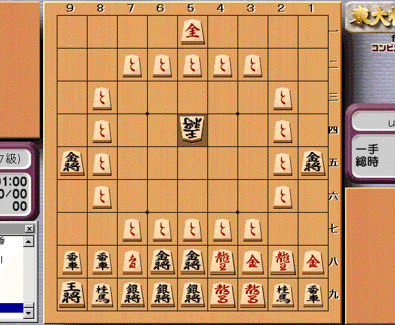

〜〜過去の日記〜〜
７）01/05/09〜01/06/12分
６）01/03/02〜01/05/03分
５）01/02/06〜01/03/01分
４）00/12/30〜01/02/05分
３）00/12/22〜00/12/29分
２）00/12/14〜00/12/21分
１）00/11/24〜00/12/13分
01/08/25
完全ノンフィクション
最近、父が難病にかかった。
おれは父が好きだった。愚昧な母と違い、優秀だったからだ。
父に励ましのメールを送った。
今さっき返事がきた。
「
メールありがとう。病名は、リウマチ性多発性筋炎と言うもので、現代医学では
ステロイド系の劇薬を長期間使い続けることになるとのことで、副作用も必ず出る
らしいので、何とか薬漬けにならずに済む方法で治らないかと色々な人の情報と
実例を元に崇教真光と言う手かざしを続けて来たところ、27日の朝急に足が全快
したような状態と気持ちになって効果が現れ、結局28日からの入院は見合わせる
ことにしました。透にはすぐには信じられないと思いますが、四次元の心や霊の
世界に素晴らしい治癒能力があることを知りました。
透も幅広く頑張って！
」
父よ！！！！！（涙）
４次元の心かっこよすぎ・・・
01/07/19
とつとお釈迦様の会話
とつともなると、神様やお釈迦様と会話することができる。
以下はこないだお釈迦様と話した時の記録である。
釈迦「おいおい ちょっと最近ヒマやよ」
とつ「ヒマってあなた・・・仮にもお釈迦様がそんなことを・・・」
釈迦「だって超ヒマやねんもん。東風行っても負けるしさあ。ドヘタが振りまくってうざい」
とつ「東風やっとんかい！」
釈迦「ＨＮは お釈迦様☆彡 」
とつ「いやかわいいかわいい！ そしてださいよ！」
釈迦「釈迦軍団作ろうかなと思ってるねんけど」
とつ「いやはやらんわ！ よくある東風団体みたいにすぐ消えてまうぞ・・・で、お釈迦様ちなみにＲはいくつですか？」
釈迦「Ｒ２だが」
とつ「おいこいつお釈迦様のくせに荒らしやよ！」
釈迦「ちゃうねん多重の残りカス」
とつ「最低やよ！ 人間界の人ら、お釈迦様が実はこんな人だとは思ってないやろうなあ・・・」
釈迦「東風も飽きてきた・・・ええ女おらんかなあ」
とつ「欲望丸出しじゃないですか。もう少し威厳を持たれてはどうですか？」
釈迦「こないだ人間の姿になって渋谷にナンパしに行ってんけど、女イタリア料理食うだけ食って帰りやがった」
とつ「え？ めっちゃかっこいい姿になれるのに・・・会話がはずまなかったのですか？」
釈迦「ちゃんと説法聞かせたんやけど・・・」
とつ「それがあかんねん！ 普通の会話にすればいいものを・・・」
釈迦「むかついたから女のバッグから口紅ぺちってきてやった」
とつ「いや細かっΣ(´ﾛ｀；) 小さい小さい！ お釈迦様小さいよ！」
釈迦「それにしてもヒマや・・・ダブルバインドゲームでもするか」
とつ「え？ どんなゲームですか？」
釈迦「これ見てみ。ほれ。ここな、地獄やねん。悪いことして死んだ人がようけ苦しんでるやろ」
とつ「・・・ほんとですね、生前に悪いことをした人がこういう目にあうんですか？」
釈迦「そうそう。」
とつ「（おれ、あかんな・・・死んだらここや）」
釈迦「お前も死んだらここやぞ」
とつ「うるさいわ！ 薄々きづいてたけど・・・いちいち宣告すなや！ 死ぬのごっつ怖なるやんけ！ 鬼！ 悪魔！」
釈迦「釈迦だが」
とつ「わかっとるわ！ あ〜あ・・・超嫌やわこのお釈迦様・・・」
釈迦「さてダブルバインドゲームやろうか」
とつ「それは何でしょう？」
釈迦「ここにほれ、一人男おるやろ。こいつ生前な、めっちゃ悪いやつやったんよ」
とつ「ほうほう」
釈迦「でもな、一つだけ善いことしたん。一匹の蜘蛛が死にそうになってる所を助けてあげた」
とつ「感動的なお話ですな」
釈迦「んでな、この蜘蛛の糸をこの地獄に垂らしてやる・・・」
とつ「おお、男が糸につかまって地獄を脱出しようとしている！」
釈迦「これを登り切れば無事、地獄脱出や」
とつ「お釈迦様、心が広いですねえ。・・・おれが地獄落ちたらこれやってくださいね？」
釈迦「お前は無理」
とつ「なんでそない言うねん！」
釈迦「何となく」
とつ「ショックでかいわ！ 気分次第かよ・・・おれだって虫の１匹や２匹助けたことあるよ！」
釈迦「しらんがなそんなん。ちゃうねん、悪いことばっかりしてて、１匹だけ蜘蛛を助けたところがポイントやねん」
とつ「どうしてですか（涙）」
釈迦「ほれそのほうが感動的な話になるやろ？ 大衆に受け容れられやすく、話題になりやすい」
とつ「ごっつ明晰やこの釈迦・・・」
釈迦「不良が更生してまじめになる番組と同じ形式よ(`ー´)ﾌｫｯﾌｫｯ」
とつ「ドキュン・・・いやドキュメンタリーまでチェックしてはるのかこの方は・・・」
釈迦「最初からまじめなヤツがまじめにしても感動うまないからな」
とつ「あっ！ お釈迦様！ さっきの男の下に、他の人たちもついてきてますよ！」
釈迦「これが狙いやねん」
とつ「このままでは重すぎて糸が切れてしま・・・あっ男が、自分の下の糸を切り離した！」
釈迦「カカッタナー えい！」
とつ「あっ！！！ お釈迦様、どうして糸を切ってしまったんです！？」
釈迦「彼は結局、自分だけ助かろうとする男だったのだよ」
とつ「なるほど・・・そういう人はやはり地獄にいるべきだ、と？」
釈迦「まあな。でもそれは大衆向けの大義名分ね( ´ｰ`)ﾌﾟﾌﾟｰｯ」
とつ「どないやねん」
釈迦「実は、この男が自分より下のやつらを切り離さなくても、結局重みで糸は切れてまうねん」
とつ「Σ(￣□￣；)」
釈迦「自分より下の糸を切ったから、バチが当たったと男は苦しむ」
とつ「はい・・・」
釈迦「でももしそうしなくても、糸は結局切れて、男は自分のバカさに苦しむ」
とつ「ハメですやん！ 汚いですよ！」
釈迦「どっちにしてもダメ、まさにダブルバインドや(`ー´)ｹｯｹｯｹ 楽しいやろ？」
とつ「お前最低やないか！ どんだけ心黒いねん！」
釈迦「釈迦に説法するなって。お前ごときが何言うても、どうせおれには勝てへんやろ」
とつ「・・・神様、どうかこの世界を救って下さい（涙）」
01/07/18
パフォーマンスでないこと
おれは個人的な問題について掲示板などで語らない。
それは全てパフォーマンスになってしまうからな。
話している自分や悩んでいる自分をみんなに見せる効果ではなく、相手に伝えたいことが伝わることが重要だ。
だからリアルで深刻な問題が生じてもそれを日記に書いたりしない。
書くときはネタになるように、パフォーマティブに。
逆に言えば、パフォーマンスにならないとき、それは真剣さの保証だ。
真剣な問題が生じたとしても、それをパフォーマティブに語っているうちはまだまだ「私は私が好きだ」でしかない。
Ｍ性の問題かもしれない。
01/07/16
浮きの構造
浮き：内容の合理性や問題解決性をないがしろにし、主として感動的な自己満足を目指すこと。
ガングロというのは浮きの典型形式である。
あれを見てかわいいとは思えないが、その「意外性」であったり「流行り」によって、それが「良いもの」とされる構造は、浮きの形式そのものである。
浮きというのは、第一次的な知覚・認識から離れた、より経験に重み付けされた、権威を背景に持った判断から生ずる。
第一次的な知覚・認識と呼んだのはひどく曖昧であるが、壮大な景色を見た時にしばしば感動してしまうような、誰もが経験や文化によらずに持つような「感動」を例として外延的に定義する。その区分は厳密でなく、定量化されておらず、にもかかわらずいくつかの物事の分析・分類に役立つ。
例えばある種の言葉の羅列──現代詩──を、単純な言葉遊びと見なせず、「深いですね」と捉えること。
わけわからん抽象画に高額の値が付くこと。
「自分らしさを求める」という行為に感動を覚えること（感動コードを無意識に処理するということ）。
これらが「浮き」である。
最も単純な判別方は、子供に何か見せてみることかも知れない。
「純粋な」子供が得る知覚・認識に近いものがここで呼んだ「第一次的な」ものである。
子供は、「深い」詩などより、簡潔な物語からより多くを得る。
抽象画より、きれいな風景を描いた絵をすごいと感じる。
犬が死んだら子供は泣くが、「自分らしさを求める」ことをしない。
技術的・工学的なものが芸術化or文学化された結果、即ち「語り」の対象にされたその瞬間、浮きが生ずる。
剣道やすもうは、その技術だけを磨いていれば良いものを、ついつい浮いて精神論が中心になってしまう。
「〜〜したくない、されたくない」の欲求は、重層的に絡み合って「徳」「人間性」なる概念に辿り着く。
麻雀の第一打の字牌などどれを先に切っても大して違わないのに、ついつい語ってしまう。
その壮大な試みの一つが哲学であり、全ての精神論であり、神であった。
陳腐な例で言うなら、麻雀の全ての語りであり、感動コードの生成であり、ガングロであった。
対象が技術化され得る度合いが少なければ少ないほど（つまり運のみであればあるほど）、対象を「深い」と見なすためには、よりたくさんの浮きが、より多くの「芸術化−文学化」が必要とされた。
茶道は、単にお茶を煎れるだけである。ある程度美味しいお茶をたてることくらい、まあ数ヶ月もすれば誰でもできるだろう。
あとは、精神論と権威づけしかやることがないわけだ。
詩もまたそうだ。言葉を適当に並べることしかできない。
いきおい、あるはずもない「深さ」が幅を利かせねばならない。
逆に、「浮き」の構造に気付いていないと、ややもするとこうした権威付けされたもの、コードとしての感動や良さをそのまま受け容れてしまうことになる。ありもしない「深さ」を言葉からムリヤリ感じ取ってみたり、単純な利己的行為から感動を見出してみたり、様々の見えないはずのものが見えるようになってしまう。浮き病である。これは大変見苦しい病気であり、みんながかかっている病気である。
この病気は、ドヘタが麻雀において無理に「読む」行為とそっくりである。
読むべき何かはそこに存在しない。深さなどない。
「詩や芸術？ 全部運のみやんか」と、ハッキリと言えなければ明晰だとはとても言えない。
01/07/10
だんだん自信が出てくる人
平均人との「議論」においてよく目にするのが「後気づき」である（学部時代のわがサークルでは、後になってから何か重大なことに気付くことの遅さ、だささを「あときづき」と読んで嘲笑する風習があった）。
後気づきの特徴は、先立つロジックがないことに尽きる。
ある人が後気付きであることを示唆するのは、ロジックの変質である。先立つロジックがある場合には、ロジックが変質しないから、それゆえにロジックの変質がある→先立つロジックがないということであり、当然の結果として後気付きの機会が増える（分析的な人間があらかじめ考えてから議論に望むのとは逆に、平均人は「しゃべりながら気付く」。しかも蒙昧に）。
議論のうちのある段階で自信なさげな、歯切れの悪いしゃべり方であったのに、ある段階から急にはしゃぎ始めるのがそれである。こないだテレビを見ていて、ある人があることについて聞かれていて、初めは歯切れが悪かったのだが、途中からお気に入りの、大衆と彼自身を信じさせるに充分な文学的表現に行き当たり、「２番目が一番いいんだ、何でもそう。２番目が一番いい」と２回言うほど舞い上がっていた。そんなに大切なロジックなら最初から言えばいい。なぜ始めに一言それが言えなかったのかというと、それが後気付きだからだ。充分に考察されておらず、その場限りの行き当たりばったりなでまかせだからだ。単にその場の雰囲気を変えるのに有効な程度の発言だからだ（なお平均人は、常にロジックではなく雰囲気で議論する）。彼は恐らく自分のその発言に、反例があるどころか、当てはまることよりも反例の方が照れてしまうほど多いという事実に「後気付き」しないだろう。彼は語る内容の正確さではなく語っている自分が好きだったのであり、それゆえ語ることだけでお腹いっぱいになってしまったからだ。彼は物事の分析に向かないタイプの人間である。
もちろん、ロジカルさを優先させないようなやりとりではそれでいい。醤油ラーメンが味噌ラーメンより美味しいと主張する時にまで「後気付き」がダメだと言われる筋合いはない。しかし例えば「流れ」の議論において、本当に「流れはあるかどうか」を議論したいとするならば、その議論の最中に後気付きをしている水準では話にならない。
01/06/30
ベタうちログ
 ある日のＩＲＣの会話（ネタ切れによる）
ある日のＩＲＣの会話（ネタ切れによる）23:11 <:drymen> レモン死んだね
23:13 <:drymen> れーもんくん
23:14 <:re-mon> あぁ、悪い悪い、他の事やってて、君など眼中になかったよ
23:14 <:drymen> うーん そうか
23:14 <:drymen> もうちょっとひねれ（謎）
23:15 <:re-mon> すいません、考え直してきます
23:15 <:drymen> まぁ ぼにーよりマシだよ
23:15 <:drymen> ねー ぼにーくん
23:16 <:drymen> ぼ ぼにーーー(/_;)
23:16 <:drymen> 寂しいからレーモンにping送りまくろう
23:16 >:TOTU_cpp< ( ´Д`)
23:16 <:BONY_> クスッ
23:16 <:drymen> あ 膣
23:17 <:drymen> 尾崎。
23:18 <:drymen> つーか 暑いね
23:18 <:drymen> 静岡３７℃とかだってさ 死ぬって
23:18 >:TOTU_cpp< そうなんか
23:22 <:drymen> レーモンは名古屋だから暑いの強かろう
23:22 <:drymen> 名古屋は暑いイメージがある
23:22 <:drymen> そーでもないかな？
23:23 <:drymen> http://weather.yahoo.co.jp/weather/jp/1a/1100.html
23:23 <:drymen> すげー 北海道住みたい
23:24 <:re-mon> 名古屋は湿度高いからやだ
23:24 <:drymen> http://weather.yahoo.co.jp/weather/jp/47/9500.html
23:24 <:drymen> 気温くらいだしたれよ 島とはいえ
23:24 <:drymen> 気象庁手抜きだなぁ
23:25 >:TOTU_cpp< だって他県に比べセンター平均点が６０点も低いねんから 当然かと ←
23:25 >:TOTU_cpp< 数字だしてもわからんねやろ
23:25 <:drymen> 人権の侵害だ(/_;)
23:25 <:drymen> それ平均６０低いくらいで済まない（涙）
23:27 <:drymen> http://weather.yahoo.co.jp/weather/world/africa.html
23:27 <:drymen> すげーよ 見れ ぼにー
23:27 >:TOTU_cpp< おまえひまか(笑)＞ＤＲＹ
23:27 <:drymen> クウェート絶対住めねぇぇ
23:27 >:TOTU_cpp< あちいいい
23:27 <:drymen> 世界中の天気見てるから忙しいが
23:28 <:drymen> つーか クウェート人間住めないよ(/_;)
23:29 <:BONY_> クウェートの48/33って・・・
23:29 <:drymen> 「あ〜今日は４０℃だ！涼しいな〜」とか言ってんのか やつらは
23:30 <:drymen> もっと暑いところ・・・ないかなぁ
23:33 <:drymen> なんか 気象庁のＨＰまできてしまった
23:34 <:drymen> 天気相談所！ なにをどう相談するんだ・・・
23:34 >:TOTU_cpp< うははは
23:35 >:TOTU_cpp< 掲示板荒らせ(笑)
23:35 <:drymen> 相談時間
23:35 <:drymen> ９時５分〜１７時
23:35 <:drymen> ５分間なにしとんのだろう
23:35 <:BONY_> 微妙な時間だ・・・
23:37 >:TOTU_cpp< その５分で天気予報してるんちゃうの？(笑)
23:37 <:drymen> 迅速過ぎる（゜ロ゜)
23:37 >:TOTU_cpp< サイコロ振って←
23:37 <:drymen> まぁ 違う地方の天気を１年もながしつづけるくらいだから
23:37 <:drymen> それくらいはしとるかもしれん
23:38 <:drymen> 天気予報にも “流れ”とかあるのかなｌ
23:38 *** fukuro has joined channel
23:38 <:drymen> （・。・)ノ ウィ ふくろ天気
23:38 <:fukuro> おじゃまします
23:38 <:re-mon> (・。・)ノ ウィ ふくろ温度
23:38 >:TOTU_cpp< (´Д｀ )ノ
23:39 <:drymen> ふくろにいきなりクイズ！
23:39 <:drymen> いいかね？
23:39 <:fukuro> 唐突すぎるぞ
23:39 <:drymen> まぁまぁ
23:39 <:drymen> カイロとクェート、明日暑いのはどっち？
23:39 >:TOTU_cpp< 超つまらんクイズやな(笑)
23:39 <:fukuro> カイロ
23:40 <:drymen> http://weather.yahoo.co.jp/weather/world/africa.html
23:40 <:drymen> ↑回答
23:40 <:drymen> 間違うと思った！絶対間違うと思った！！
23:40 <:drymen> やーいやーい！！！
23:40 >:TOTU_cpp< クウェートに凡庸な都市が勝てると信じてるところが若いよな・・＞ＤＲＹ
23:40 <:drymen> （ ёνё）ブハハハ!
23:40 <:drymen> クェート安定温度高いで
23:40 <:drymen> クェ←発音無理
23:41 >:TOTU_cpp< 絶不調でも３３度やからな
23:41 <:drymen> カイロがたまたまついていても ４０℃いかないだろうし
思ったこと：やっぱドライにはかてね〜(笑) おもろすぎ
01/06/24
将棋
おれは麻雀も好きだが、将棋も好きだ。
ただ将棋は奥が深くて、麻雀のように始めて１年で「強い」レベルに達することはできそうにない。
小学校の時には子供会の大会とかで優勝してたりしたが、全然ふれてなかったからもうついていけない。
将棋のアルゴリズム研究はかなり進んでいて、おれレベルだと半々以下でしか勝てないような将棋ソフトも多い。
将棋で、どんな時にどう打つかというのは、それこそ「状況による」のだが、戦局の判断とかのレベルの高さには感服する。
しかしまあ、コンピュータと将棋して楽しいのは、相手が簡単に投了しないことに尽きる。
普通のプロなら即座に「参りました」と言うべき局面でも、コンピュータは悪あがきする。
だから、相手の王以外のすべてのコマを取ってしまって、「と金」を育成したりするのが楽しい。
玉（相手）
ととととととととと
ととととととととと
銀金銀金銀金銀金
飛 飛 角 角
香香香香桂桂桂桂
王
はよ投了しとけや！ 手遅れやよ！！
このような陣形を組み、と金を１つずつ前に動かして相手を追いつめたりするのも楽しい。
かと思うと、おもむろに「と金カベ」を後ろに下げたり、やっぱり前に出したりすると相手がアタフタしてるようで笑える。
「と金カベ」が迫ってくる時、相手の王は何を考え、何を夢見ているのであろうか・・・？
その答えは、きっといつの日か見つかるだろう（感動）。

01/06/22
大衆の権化 21世紀、大衆はこう変わる！
Ａ「ちょっとジュース買いたいねんけど、小銭持ってない？」
Ｂ「状況による」
Ａ「わかっとるわ！！ あるんかないんか聞いとるねん・・・あ、ありがと。お前はどれにする？」
Ｂ「一概には言えない」
Ａ「いや、言えや！ それじゃ何も進まへんねん！ コーラでええな」
Ｂ「コーラが絶対ではない、多面的な観点から選択することが大切だ」
Ａ「おまえ誰やねん！ じゃあ何飲むねん？」
Ｂ「今私が飲みたいのはファンタだと定義できる」
Ａ「なんで小難しいねん。しかも使い方間違ってるよ。ほれ、ファンタ」
Ｂ「ありがとうと定義できる」
Ａ「やかましわ！」
01/06/21
浮いていないドラえもん
のび太「ど〜ら〜え〜も〜ん（涙）」
ドラえもん「どうしたんだいのび太くん？」
のび太「ジャイアンがまた僕をいじめるんだ、何か出して〜〜」
ドラえもん「しょうがないなあもう、のび太くんは・・・」
チャラララ♪
ドラえもん「はい、包丁」
・・・少しは夢を与えてくれよ
01/06/20
ドラクエの呪文（ドラクエ知ってる人にのみ対応）
ドラクエの呪文の、どれか一つを現実世界で使えるとしたらどれを覚えるべきか？
という議題のもとに友達と激論した。
ヒトシンカ「基本として、ホイミ系は使えるのではないか」
とつ「まあ体力回復やからね 需要は多い。個人的にはライターがない時にメラが使えると便利かな」
ヒトシンカ「確かにそれは便利だが、メラゾーマまで行くと現実的にはむしろ使いにくい」
とつ「そうやね。ギラとかヒャドは使えなさそうやねえ」
ヒトシンカ「ルーラは超便利だと思われる」
とつ「うん、ルーラ欲しいな。世界各国回って、どこにでも一瞬で飛べるようにしとくべき」
ヒトシンカ「高知県や、宮崎県や、大分県や、福井県などにね」
とつ「いやなんでそんなマイナーなとこばっかりやねん！ そんなルーラいらんわ」
ヒトシンカ「スクルトなどはどうかね？」
とつ「いらんいらん！ 現代社会でおまえ、自分の防御力上げても意味あれへんやろ」
ヒトシンカ「ボミオスなどは？」
とつ「それもいらんわ！ 足を遅くする呪文やったっけ？」
ヒトシンカ「敵が遅くなると便利ではなかろうか」
とつ「だから敵って誰やねん！」
ヒトシンカ「ザオリクが使えると、かなり金儲けできるだろうな」
とつ「病院とかで死んだ人を生き返らせるんか、それは金儲けになるなあ(笑)」
ヒトシンカ「しかしザオラルの方が良い」
とつ「え、ザオリクの方が成功率高いのに！？」
ヒトシンカ「確実に成功したらうまみがないではないか。２回に１回失敗し、その時も金を取ればよりオイシイ」
とつ「・・・現実的に非現実的なことを考えるな」
ヒトシンカ「結局、一番有効な呪文はインパスか・・・」
とつ「一番いらんわ！ 宝箱が落ちていて、かつワナがあるかどうか判定する必要が生ずることって、普通に生きてたら絶対ないよ！」